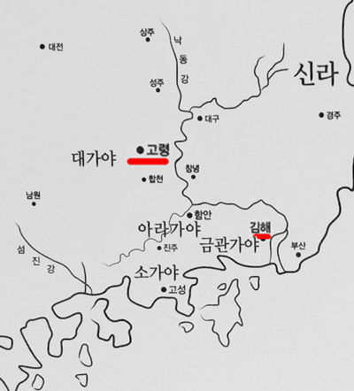

ios_history_ver:3.06
: 정오표에 등록된 오류를 수정함
---
[객관식 문제]
경찰1차 2021년 추가
(OX문제와 주요키워드에는 추가 못함ㅠㅠ)
---
Lite버전에 [보상형광고] 추가
: 문제풀이 중간에 전면형 광고가 불편하신 분들을 위해 추가
: (최대 12시간 까지 광고없이 이용가능)
현 버전(3.05)
[정오표와 버그]
iPad에서 {문제검색, 체크노트}모드 시 다음문제로 이동하는 버튼이 안 나오는 버그
----
한반도 비핵화 공동선언(1992 노태우)
(기존에 {합의일, 가서명일}인 1991.12.31로 잘못 표시)
----
지7.2013년 18번 고려시대 경제
아래 해설 추가
ㄷ.고려
고려시대에도 녹읍과 식읍제도가 존속
:녹읍은 후삼국 통일이후에 폐지
__고려건국➔발해멸망(926)➔신라멸망➔후백제 멸망
:호(戶)를 단위로 분급되던 식읍은 조선 초까지 존속되다가 조선 세조때 폐지
: 수양대군(세조)이 식읍을 받은 기록 있음
----
금관가야, 대가야 해설에 아래그림을 추가해야 함

ios_history_ver:3.05
: 정오표에 등록된 오류를 수정함
---
서울7.18년
: 전체적으로 키워드가 부실해서 추가.수정함
---
[주요키워드]
: 유향소 책임자(좌수,별감)...
: 쪼끔 추가함
ios_history_ver:3.04
: 정오표에 등록된 사항을 반영함
서울9.18년
: 전체적으로 해설이 부실해서 키워드를 추가.수정함
: 일부 저질해설 수정
---
[문제풀이]
: 한 번 실행 후 랜덤 퀴즈를 2회이상 풀경우 중복된 문제가 나오지 않도록 조정함
---
*시대별로 풀기모드는 작업량이 너무 많아 오래 걸릴 것 같아요
(그래도 조금씩 작업하고는 있어요)
시대별로 풀기모드가 없는 대신 검색모드를 최대한 활용하시길 추천드려요
예)검색에서 '신문왕'등으로 검색 후 {고양이 얼굴}을 터치하면 검색결과를 문제로 풀 수 있어요
---

문제의 글자가 너무 작아 눈이 아프신 분들은 가로 모드를 시도해 보세요
----